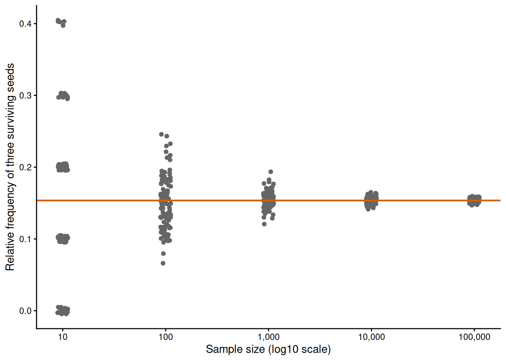
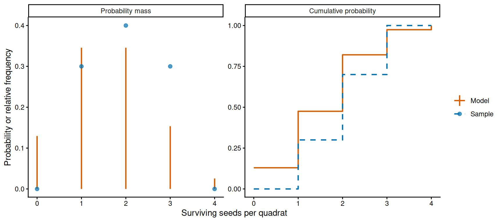
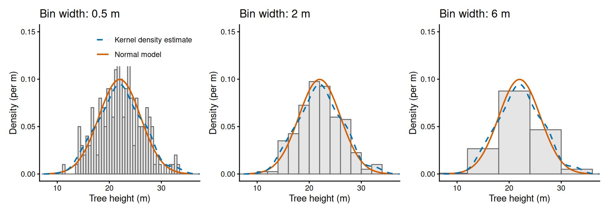
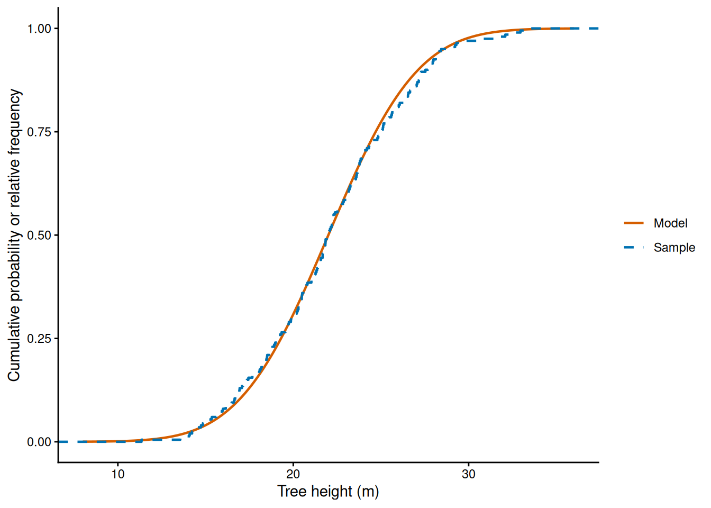
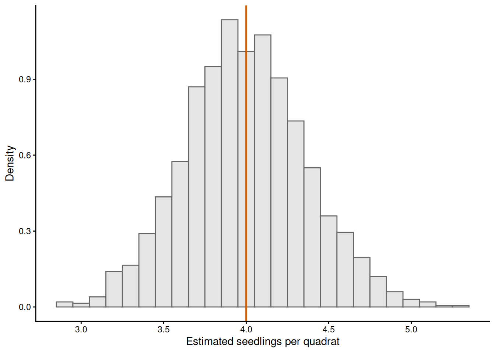
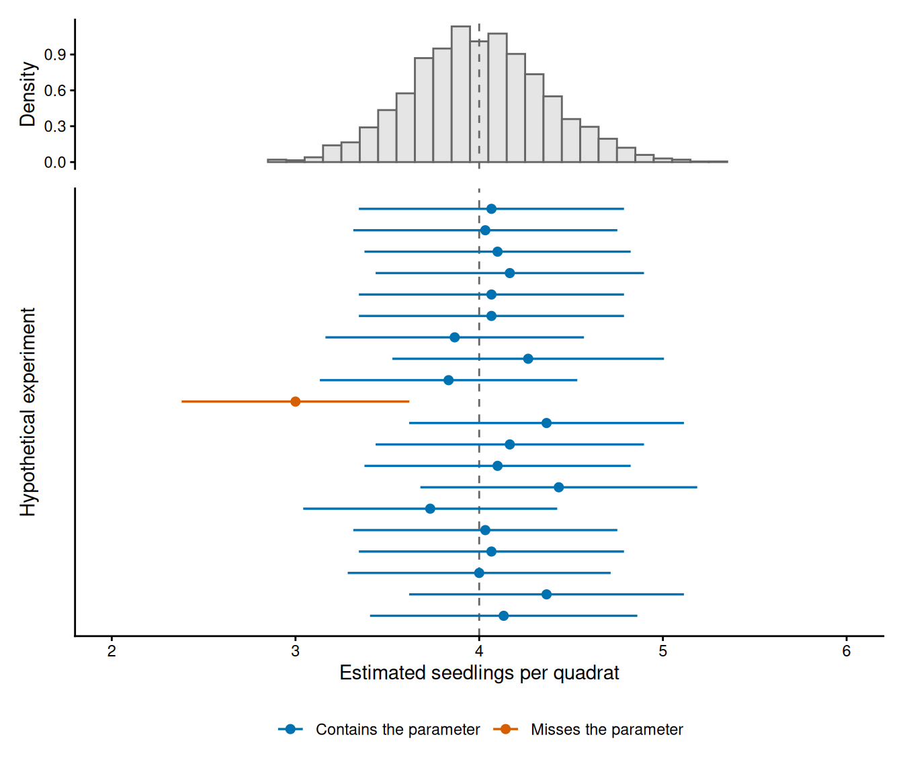
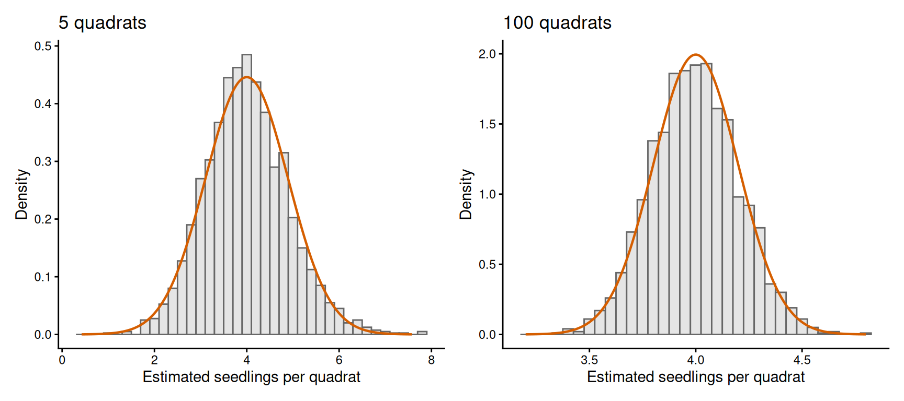

# Parameters of the Binomial model of seed survival used in Chapter 2.
seed_count = 4
seed_survival_probability = 0.4
# Simulate ten quadrats from the Binomial model.
set.seed(seed = 123)
n_quadrats = 10
sample_survivors = rbinom(
n = n_quadrats,
size = seed_count,
prob = seed_survival_probability
)From samples to estimates
1 Introduction
In this chapter, we learn how to relate samples of data to probability distributions and how to use a sample to estimate the parameters of a model. In Chapter 2 we chose the parameters of a distribution and calculated probabilities, quantiles and expectations from them. In research we face the reverse problem: we have a limited sample of observations and we want to learn about the parameters of the model that we use to describe them.
The chapter has two parts. First we look at how samples and distributions are related, through relative frequencies and the empirical distribution of a sample, both for counts and for continuous measurements. We then define estimators and study how their estimates vary across repeated hypothetical experiments, which leads to standard errors and confidence intervals. The first part continues with the Binomial model of seed survival from Chapter 2. The second part uses a Poisson model for counts of seedlings and a Normal model for tree heights. Most of the data in this chapter are simulated, because in a simulation we know the parameters that generated each sample and we can compare the estimates with them.
2 Learning goals
In this chapter, we will cover:
- how samples and distributions are related (relative frequencies and the empirical distribution);
- histograms, density estimates and empirical cumulative distributions for continuous measurements;
- parameters, estimators and estimates;
- the method of moments;
- the sampling distribution of an estimator, its bias, variance and mean squared error;
- standard errors;
- confidence intervals and their coverage;
- consistency and asymptotic normality.
We will use the Binomial, Poisson and Normal distributions throughout the chapter. They are described in the Supplement.
3 Samples and distributions
So far we have been working with mathematical models: we calculate probabilities and expectations of distributions. But in research we collect limited, often noisy, samples of data and want to generalise from these observations to the broader context in which they were collected. As discussed in Chapter 1, we use statistical models as approximations for the data generating process. This means that we treat the observations from our experiments as if they were random samples from our statistical model. In this section we learn in more detail about this relationship as it will be the basis for the rest of this chapter.
For example, we might want to learn about seed survival across a restoration site while observing only some quadrats. We cannot quietly turn those observed quadrats into a claim about the whole site. To make that connection, we need assumptions about how quadrats were selected and how their counts vary from quadrat to quadrat. We model this data generating process with a distribution that is (at least qualitatively) compatible with that process.
3.1 From frequency to probability
For a sample of counts, the relative frequency of a value is the number of times it appears divided by the sample size. Let’s simulate ten quadrats from the Binomial model of seed survival used in Chapter 2 (four seeds per quadrat, each surviving with probability 0.4):
table() counts how often each value appears. Divide by the number of quadrats to calculate relative frequencies:
# Count each possible value and divide by the sample size.
seed_values = seq.int(from = 0, to = seed_count)
count_survivors = table(factor(x = sample_survivors, levels = seed_values))
relative_frequency = count_survivors / length(sample_survivors)
relative_frequency
0 1 2 3 4
0.1 0.3 0.3 0.3 0.0 Some possible counts may be absent from a small sample. Setting all possible values as factor() levels makes table() include those counts with frequency zero.
The relative frequencies lie between zero and one and sum to one. Compare them with the probabilities predicted by the Binomial model that we use to approximate the data generating process:
# Put the sample frequencies beside the model probabilities for comparison.
data.frame(
seed_count = seed_values,
relative_frequency = as.numeric(x = relative_frequency),
probability = dbinom(
x = seed_values,
size = seed_count,
prob = seed_survival_probability
)
) seed_count relative_frequency probability
1 0 0.1 0.1296
2 1 0.3 0.3456
3 2 0.3 0.3456
4 3 0.3 0.1536
5 4 0.0 0.0256The two columns differ because the sample contains only ten quadrats. That is not a failure of the model: it is what sampling variation looks like. For small sample sizes, the relative frequencies and model probabilities can differ greatly. However, for independent and identically distributed (i.i.d.) observations, the relative frequency of each count approaches its model probability as sample size grows. This is a consequence of the Glivenko–Cantelli theorem.1
For example, let \(I_i=1\) when the \(i\)th quadrat has exactly three surviving seeds and \(I_i=0\) otherwise. The relative frequency of three survivors is \(\bar{I}_n=(I_1+\cdots+I_n)/n\). For any positive margin \(\varepsilon\),
\[ \lim_{n \to \infty} P\left(\left|\bar{I}_n - P(X=3)\right| \ge \varepsilon\right)=0. \]
In plain English, as \(n\) grows, the chance that the relative frequency differs from the model probability by at least \(\varepsilon\) becomes small. There are two probabilities here: the probability assigned to a count by the model, and the probability of seeing a relative frequency that is far from the model one. This convergence is not deterministic: a larger realised sample need not be closer to the model probability than every smaller realised sample.
NoteFrequencies converge to probabilities
For independent observations from the same distribution, the relative frequency of any specified value converges in probability to its probability mass as sample size grows.
We can push the simulation further and compare relative frequencies at sample sizes from 10 to 100,000 to see this convergence in action:
# Compare relative frequencies for several sample sizes with the model.
set.seed(123)
sample_sizes = 10^(seq_len(length.out = 5))
seed_values = seq.int(from = 0, to = seed_count)
all_frequencies = matrix(NA, nrow = length(seed_values),
ncol = length(sample_sizes) + 1)
colnames(all_frequencies) = c(as.character(sample_sizes), "theory")
for (i in seq_along(sample_sizes)) {
sample_survivors = rbinom(
n = sample_sizes[i],
size = seed_count,
prob = seed_survival_probability
)
count_survivors = table(factor(
x = sample_survivors,
levels = seed_values
))
all_frequencies[, i] = as.numeric(count_survivors) / sample_sizes[i]
}
all_frequencies[, length(sample_sizes) + 1] = dbinom(
x = seed_values,
size = seed_count,
prob = seed_survival_probability
)
round(all_frequencies, 3) 10 100 1000 10000 1e+05 theory
[1,] 0.1 0.11 0.129 0.125 0.130 0.130
[2,] 0.3 0.39 0.348 0.352 0.347 0.346
[3,] 0.3 0.35 0.359 0.347 0.344 0.346
[4,] 0.3 0.13 0.138 0.152 0.153 0.154
[5,] 0.0 0.02 0.026 0.024 0.026 0.026One sequence of samples cannot show convergence directly. For example, the relative frequency of three surviving seeds at 10,000 quadrats can happen to be closer to the model probability than its value at 100,000 quadrats. To show what usually changes with sample size, repeat the simulation 100 times at each size. This is shown in Figure 1. At small sample sizes, the repeated relative frequencies cover a wide range. As the sample size grows, the relative frequencies concentrate around the probabilities of the model. Individual samples can still generate values far from the line, but large deviations become less likely.

ImportantPractice: fruit-set frequency
In a sample of 24 tagged orchid flowers, 15 set fruit. Calculate the relative frequency of fruit set. Explain what this value estimates and why it need not equal the model fruit-set probability exactly.
TipSolution
The relative frequency is \(15/24=0.625\). It is not equal to the probability assigned by the model to that count, but it is probably not too different for a sample of 24.
3.2 Empirical distribution
Because of this relationship between the relative frequencies and probabilities, we often define the empirical distribution of a sample.2 This is a procedure where we assign each observed count its relative frequency and we treat it as if it were a probability mass function (Figure 2). In principle it is just a way to tabulate a (potentially long) collection of observations, but we will see that this also facilitates calculating properties of a sample such as quantiles or expectations that we can relate to the equivalent properties of the model.
NoteEmpirical distribution
A distribution whose mass at each count equals the relative frequency in the sample.
The empirical distribution is also important because, generally speaking3, a sample whose empirical distribution matches well the model distribution will generate reasonable estimates of the model’s parameters with relatively low uncertainty. In this we would say that the “sample is representative” of the process we are trying to model. This is why it is crucial to avoid introducing biases in the way we collect data from experiment (motivating procedures such as randomisation).
Like any distribution, an empirical distribution has a cumulative function: the fraction of observations at or below each count. When comparing the empirical and model cumulative probability functions, we often use step-plots, which easily allow both functions side by side (Figure 2). These types of visualisations are useful if you want to compare how well a distribution matches a given sample of data (i.e., we want to test if a sample of observations could be treated as a random sample from a given distribution). We will expand on this notion in later chapters.

3.2.1 Mean, variance and quantiles of a data sample
Just like for any probability distribution described in Chapter 2, we can compute expectations such as means and variances from an empirical distribution, as well as quantiles by inverting the empirical cumulative distribution. We will simply replace probabilities in the formulae by relative frequencies of the sample.
Note that, strictly speaking, a data sample is just a collection of values. It does not have a mean or a variance; those are properties of distributions. However, language in applied statistics is often used lazily and inconsistently, which can lead to a lot of confusion. Whenever we say sample mean or sample variance we actually imply the mean or variance of the empirical distribution (but see below that the variance of a sample is an even more confusing term).
It is trivial to see that the mean of the empirical distribution equals the arithmetic mean of the sample:
# Simulate a small sample and calculate its weighted and ordinary means.
set.seed(123)
n_quadrats = 10
seed_count = 4
seed_survival_probability = 0.4
seed_values = seq.int(from = 0, to = seed_count)
sample_survivors = rbinom(
n = n_quadrats, size = seed_count, prob = seed_survival_probability
)
count_survivors = table(factor(x = sample_survivors, levels = seed_values))
relative_frequency = as.numeric(count_survivors) / n_quadrats
weighted_average = sum(relative_frequency * seed_values)
sample_mean = mean(sample_survivors)
c(weighted_average, sample_mean)[1] 1.8 1.8However, the variance of the empirical distribution is not exactly the same as what we normally call sample variance:
# Calculate the variance of the empirical distribution
empirical_variance = sum((seed_values - weighted_average)^2 * relative_frequency)
sample_variance = var(sample_survivors)
c(empirical_variance, sample_variance)[1] 0.960000 1.066667It turns out that what most people call sample variance is actually a statistical estimator of the variance of the model distribution (i.e., in this case the variance of the Binomial distribution), which is a completely different concept. For reasons that will become clear in Section 8, this variance is calculated with a different formula4.
A quantile from the empirical distribution can be derived from the quantile() function. Note that when dealing with discrete data you need to use type = 1 as an argument. For example, if we calculate the quantile for a cumulative probability of 0.5 (i.e. the median) it will return the smallest observed count whose empirical cumulative probability reaches \(0.5\):
# Use type = 1 so the empirical quantile is one of the observed counts.
quantile(x = sample_survivors, probs = 0.5, type = 1)50%
2 The function quantile() appears in many areas of statistics, and there are up to nine different ways of computing it in R. So the purpose for which we calculate the quantile really matters.
3.2.2 Asymptotic convergence of the empirical distribution
NoteAsymptotic convergence of empirical distribution
For independent observations from the same fixed distribution, the empirical probability mass function converges to the model probability mass function as sample size grows towards infinity. All the moments (means, variances, and others), as well as all quantiles from the empirical distribution, will also converge to their equivalent values in the model. With bounded counts, as in our Binomial example, the empirical mean and variance also converge to the values in the model. A finite sample can sometimes agree exactly; agreement is not guaranteed at any finite size.
By defining the empirical distribution we can now better understand how samples and distributions are related. That is, a collection of observations can be treated as a random sample from a model if the empirical distribution converges to that model as sample size increases. This does not imply that the observations are actual random samples from some mathematical stochastic representation; it simply means that we have modelled the variation across different observations correctly.
Note that in practice we can never verify this relationship as we will never have infinite samples and for any finite size there can be deviations. But it does mean that the larger the sample, the better we can judge if we have a good model (Figure 3). Also, larger samples are more stable, meaning that there will be less variation across hypothetical repetitions of the experiment, which will increase our confidence (reduce our uncertainty) in the results (we cover this in more detail in Section 5).

ImportantPractice: orchid flowering across plots
Suppose each restoration plot contains 12 orchid plants. Each plant flowers with probability 0.25, independently of the others. Let \(X\) be the number of flowering plants in a plot. This is a Binomial model. Simulate counts for 12 plots and for 500 plots. For each sample, calculate the empirical mean and plot the empirical mass function. Compare both distributions with the model probability mass function. What changes in the result from the larger sample? How much can you rely on a single simulation?
TipSolution
One possible simulation is:
# Simulate the two sample sizes and compare each with the same model.
set.seed(246)
plants_per_plot = 12
flowering_probability = 0.25
small_plot_counts = rbinom(
n = 12,
size = plants_per_plot,
prob = flowering_probability
)
large_plot_counts = rbinom(
n = 500,
size = plants_per_plot,
prob = flowering_probability
)
mean(small_plot_counts)[1] 2.416667mean(large_plot_counts)[1] 2.98count_values = seq.int(from = 0, to = plants_per_plot)
small_plot_table = table(factor(
x = small_plot_counts,
levels = count_values
))
large_plot_table = table(factor(
x = large_plot_counts,
levels = count_values
))
small_frequency = as.numeric(small_plot_table) / length(small_plot_counts)
large_frequency = as.numeric(large_plot_table) / length(large_plot_counts)
model_mass = dbinom(
x = count_values,
size = plants_per_plot,
prob = flowering_probability
)
small_frequency_data = data.frame(
flowering_plants = count_values,
probability = small_frequency,
series = "12 plots"
)
large_frequency_data = data.frame(
flowering_plants = count_values,
probability = large_frequency,
series = "500 plots"
)
model_mass_data = data.frame(
flowering_plants = count_values,
probability = model_mass,
series = "Binomial model"
)
# Use bars for one empirical distribution, points for the other, and lines for the model.
# Set common axis limits
all_probabilities = c(
small_frequency_data$probability,
large_frequency_data$probability,
model_mass_data$probability
)
plot(
NA,
xlim = range(count_values),
ylim = c(0, max(all_probabilities)),
xaxt = "n",
xlab = "Flowering plants per plot",
ylab = "Probability or relative frequency"
)
axis(1, at = count_values)
# Draw bars for the small empirical distribution
with(
small_frequency_data,
rect(
flowering_plants - 0.35,
0,
flowering_plants + 0.35,
probability,
col = "grey",
border = 1
)
)
# Add points for the large empirical distribution
with(
large_frequency_data,
points(
flowering_plants,
probability,
pch = 16,
col = 2
)
)
# Add vertical lines for the model distribution
with(
model_mass_data,
segments(
flowering_plants,
0,
flowering_plants,
probability,
col = 3
)
)
# Add one legend for all three series
legend(
"topright",
legend = c("12 plots", "500 plots", "Binomial model"),
col = c(1, 2, 3),
fill = c("grey", NA, NA),
border = c(1, NA, NA),
pch = c(NA, 16, NA),
lty = c(0, 0, 1)
)
The larger sample will generally give a more stable empirical distribution and mean closer to the values in the model. A particular simulation need not be closer in every summary, and the empirical distribution need not exactly match the model.
3.3 Samples of continuous measurements
The relationship between samples and distributions is the same for continuous measurements, but the tools to describe a sample need to be adapted. In a sample of continuous values we do not expect any value to be repeated, so the relative frequency of every observed value is \(1/n\) and a table of relative frequencies tells us nothing. We will use the Normal model of tree height from Chapter 2, with a mean of 22 m and a standard deviation of 4 m, to illustrate how to describe a sample of continuous data. We simulate the heights of 200 trees from this model:
# Simulate the heights (in m) of 200 trees from the Normal model.
set.seed(seed = 73)
height_sample = rnorm(n = 200, mean = 22, sd = 4)A histogram is the continuous counterpart of the table of relative frequencies. We divide the range of the measurements into intervals (called bins) and count the observations that fall in each bin. Dividing the count by the sample size gives the relative frequency of the bin, which we can compare with the probability that the model assigns to that interval. For example, for heights between 20 and 22 m:
# Relative frequency of heights between 20 and 22 m in the sample.
mean(height_sample > 20 & height_sample <= 22)[1] 0.195# Probability that the model assigns to the same interval.
pnorm(q = 22, mean = 22, sd = 4) - pnorm(q = 20, mean = 22, sd = 4)[1] 0.1914625That is, 39 of the 200 trees are in this bin, a relative frequency of \(39/200 = 0.195\), and the model probability is approximately \(0.191\). As with counts, the Glivenko–Cantelli theorem applies to each bin: its relative frequency converges to the model probability of the interval as sample size grows.
To compare a histogram with a probability density function we need to scale it in the same units. In a density-scaled histogram the height of each bar is the relative frequency divided by the width of the bin, so that the area of the bar equals the relative frequency and the areas of all bars add up to one. For the bin above, the height of the bar is \(0.195 / 2 = 0.0975\) per metre (middle panel of Figure 4), which we can compare with the Normal density in the middle of the bin (dnorm(x = 21, mean = 22, sd = 4) is approximately \(0.097\) per metre). In R, hist() draws a histogram of counts by default and a density-scaled histogram with the argument probability = TRUE.
The width of the bins is our choice and it changes how the same sample looks (Figure 4). Narrow bins contain few observations each, so the heights of the bars vary a lot from bin to bin. Wide bins are more stable, but hide the shape of the distribution within each bin. There is no correct bin width; the larger the sample, the narrower the bins can be.
A kernel density estimate is a smooth alternative to the histogram. Instead of counting observations in bins, it places a small smooth curve (the kernel, by default a Normal density) on top of every observation and averages these curves. The standard deviation of the kernel is called the bandwidth and it plays the same role as the bin width: a small bandwidth produces a wiggly estimate and a large bandwidth a very smooth one. In R, density() calculates the kernel density estimate and chooses a bandwidth from the sample:
# Kernel density estimate of the sample; bw is the bandwidth that R chose (in m).
height_density = density(x = height_sample)
height_density$bw[1] 1.310716Note that a kernel density estimate is calculated from the sample without assuming a model, whereas dnorm() is the density of the model that we chose. The two curves in Figure 4 differ because of sampling variation, even though the sample was generated from that model.

The empirical cumulative distribution needs no adaptation: it is still the fraction of observations at or below each value, and it requires neither bins nor a bandwidth. With continuous data it increases by \(1/n\) at each observed value, whereas the cumulative probability function of the model is a smooth curve (Figure 5). In R, ecdf() returns the empirical cumulative distribution of a sample as a function that we can evaluate at any value:
# ecdf() returns a function; evaluate it at a height of 26 m.
height_ecdf = ecdf(height_sample)
height_ecdf(26)[1] 0.81# Cumulative probability of the model at the same height.
pnorm(q = 26, mean = 22, sd = 4)[1] 0.8413447So 81% of the simulated trees are at most 26 m tall, while the model assigns a probability of approximately \(0.84\) to that event. The mean, variance and quantiles of the sample are calculated as before (for continuous data the default type of quantile() is appropriate), and the asymptotic convergence described above also holds: the empirical cumulative distribution converges to the cumulative probability function of the model as sample size grows.

ImportantPractice: bins and seeds
You simulate 200 tree heights from the Normal model and draw a density-scaled histogram. Would a different seed produce the same histogram? Would a different bin width change the mean of the sample?
TipSolution
A different seed produces a different sample, so the histogram will change (although with 200 trees its overall shape should remain similar). The bin width only changes how the sample is displayed. The values in the sample remain the same and so does their mean.
4 Parameters, estimators and estimates
A parameter is a quantity that defines a model distribution, such as the probability \(p\) of a Binomial distribution or the mean \(\mu\) and standard deviation \(\sigma\) of a Normal distribution. So far we have chosen the values of the parameters ourselves. With real data the parameters are unknown and we want to learn about them from a sample. An estimator is a rule (i.e., a function) that we apply to a sample to calculate a value for a parameter. Since we treat the observations as random variables, an estimator is also a random variable: a different sample would give a different result. An estimate is the value that the estimator returns for the sample that we actually observed. We mark estimators and estimates with a hat, e.g., \(\hat\lambda\) for a parameter \(\lambda\).
To illustrate these concepts we will use counts of seedlings in quadrats across a restoration site. Let \(X_i\) be the number of seedlings in quadrat \(i\). We model the counts with a Poisson distribution,
\[ X_i \sim \operatorname{Poisson}(\lambda), \]
where \(\lambda\) is the expected number of seedlings per quadrat. We assume that the counts are i.i.d. (see Chapter 2). That is, all quadrats have the same area and the same expected count, and the count in one quadrat does not change the probabilities for the others. The parameter \(\lambda\) is unknown.
NoteParameter, estimator, and estimate
A parameter is a fixed, unknown quantity that defines the model distribution, such as \(\lambda\). An estimator is a rule applied to a random sample, so its result varies across hypothetical experiments. An estimate is the number obtained by applying that rule to one particular sample.
Suppose that ten quadrats give us the following counts:
# Seedling counts from ten illustrative quadrats.
seedling_counts = c(3, 5, 2, 7, 4, 3, 4, 1, 6, 5)
# Mean of the sample (seedlings per quadrat).
mean(seedling_counts)[1] 4The mean of the sample is 4 seedlings per quadrat. As \(\lambda\) is the mean of the Poisson distribution, the mean of the sample seems a reasonable estimate of \(\lambda\). The method of moments turns this intuition into a general procedure.
4.1 Method of moments
The method of moments constructs estimators by equating expectations of the model distribution to the same expectations of the empirical distribution of the sample (Section 3), and solving the resulting equations for the parameters. The expectations that we equate are the mean \(E[X]\) and the central moments introduced in Chapter 2, starting with the variance \(\operatorname{Var}(X)=E[(X-E[X])^2]\). A model with one parameter needs one equation, which is normally the mean. A model with two parameters needs a second equation, which is normally the variance. The skewness and kurtosis could supply further equations for models with more parameters, but we do not need them in this course.5 The justification for the method is the asymptotic convergence of the empirical distribution: if the moments of the empirical distribution converge to the moments of the model as sample size grows, then a parameter calculated from the former should be close to the parameter of the model when the sample is large enough.
For a Poisson distribution the mean is \(E[X_i]=\lambda\). The mean of the empirical distribution is the mean of the \(n\) counts in the sample,
\[ \overline X = \frac{1}{n}\sum_{i=1}^{n}X_i. \]
Equating the two gives the method-of-moments estimator of \(\lambda\):
\[ \hat\lambda = \overline X. \]
Applied to our ten quadrats, the estimate is \(\hat\lambda=4\) seedlings per quadrat. A model with two parameters requires two equations, one for the mean and one for the variance, as we will see in Section 8.
Maximum likelihood (Chapter 4) is the method of estimation that we use in the rest of the course. We start with the method of moments because its estimators are short formulae, which makes it easier to study how estimates vary across samples. The concepts introduced in the rest of this chapter (sampling distribution, standard error and confidence interval) apply to any estimator.
ImportantPractice: estimate from quadrats
A second sample of five quadrats has counts 2, 4, 3, 5, and 1. What are the parameter, the estimator, and the estimate under a Poisson model? Give the estimate with its units.
TipSolution
The parameter is \(\lambda\), the expected number of seedlings per quadrat. The estimator is \(\hat\lambda=\overline X\). For these five counts, the estimate is \((2+4+3+5+1)/5=3\) seedlings per quadrat.
5 Sampling distributions
The sampling distribution of an estimator is the distribution of its estimates across repeated hypothetical experiments. Each hypothetical experiment repeats the whole data collection with the same design and sample size, on the same model, and gives a new sample and therefore a new estimate. It tells us how much an estimate could have changed if we had repeated the experiment, so we will use it to quantify the uncertainty in an estimate (Section 6 and Section 7). The sampling distribution is an imaginary construct: in a real study we carry out the experiment once, obtain one estimate, and never observe the sampling distribution itself.
NoteSampling distribution
The distribution of the estimates of an estimator across repeated hypothetical experiments with the same design and sample size.
Note that there are two distributions and two kinds of repetition involved. Within one experiment, the quadrats are the replicates, and the Poisson distribution describes the variation of the counts across them. Between experiments, the sampling distribution of \(\hat\lambda\) describes the variation of the mean of the \(n\) quadrats of an experiment across hypothetical experiments. Adding quadrats to an experiment increases \(n\); it does not repeat the experiment.
With real data we only have one experiment, so we cannot observe the sampling distribution. For a finite sample its shape is in general unknown, except in special cases where it can be derived mathematically. The general way to study it is a simulation, where we choose the parameter of the model and carry out as many hypothetical experiments as we want. Let’s assume a Poisson model with \(\lambda=4\) and an experiment with 30 quadrats, and carry out 2,000 hypothetical experiments. For each one we calculate the estimate of \(\lambda\):
# Parameter of the model, quadrats per experiment and number of hypothetical experiments.
set.seed(seed = 401)
true_lambda = 4
n_quadrats = 30
n_experiments = 2000
# replicate() runs the expression n times and collects the results in a vector.
# Each run simulates one experiment with 30 quadrats and returns its estimate of lambda.
lambda_estimates = replicate(
n = n_experiments,
expr = mean(rpois(n = n_quadrats, lambda = true_lambda))
)
# Mean and standard deviation of the 2,000 estimates (one per hypothetical experiment).
mean(lambda_estimates)[1] 3.9952sd(lambda_estimates)[1] 0.3686016The estimates have a mean of approximately 4.00 and a standard deviation of approximately 0.37 seedlings per quadrat. Their distribution, which approximates the sampling distribution of \(\hat\lambda\), is shown in Figure 6. The horizontal axis is a mean count per quadrat, which is why its values are not restricted to integers.

5.1 Bias and variance
We describe a sampling distribution with its mean and its variance, which tell us whether the estimator is centred on the true parameter value and how much the estimates vary around that centre. The bias of an estimator is the difference between the mean of its sampling distribution and the parameter that it estimates. Using \(\theta\) for a parameter in general and \(\hat\theta\) for its estimator:
\[ \operatorname{Bias}(\hat\theta)=E[\hat\theta]-\theta. \]
An estimator is unbiased when its bias is zero. For i.i.d. Poisson counts, \(E[\hat\lambda]=\lambda\), so the mean of the sample is an unbiased estimator of \(\lambda\) (the sample mean is unbiased for the mean of the model for any distribution). However, unbiasedness is the exception and not the rule. Most estimators are biased in finite samples, such as the method-of-moments estimator of a variance (Section 8), or a non-linear function of an unbiased estimator (e.g., \(e^{-\hat\lambda}\) as an estimator of the probability \(e^{-\lambda}\) of an empty quadrat). In general, we can only expect the bias of an estimator to become small as the sample size grows (Section 9). Bias is a property of the whole sampling distribution: individual estimates of an unbiased estimator still fall above or below the parameter (Figure 6).
The variance of an estimator is the variance of its sampling distribution. For the mean of \(n\) i.i.d. Poisson counts,
\[ \operatorname{Var}(\hat\lambda)=\frac{\lambda}{n}. \]
In other words, the variance of the estimator decreases as the sample size grows. The variance of the counts in individual quadrats remains \(\lambda\); what decreases is the variation among the means of hypothetical experiments. We can compare these results with the simulation:
# Compare the simulated bias and variance with the variance derived from the model.
c(
simulated_bias = mean(lambda_estimates) - true_lambda,
simulated_variance = var(lambda_estimates),
model_variance = true_lambda / n_quadrats
) simulated_bias simulated_variance model_variance
-0.0048000 0.1358671 0.1333333 The simulated bias is close to zero (approximately \(-0.005\)) and the simulated variance (approximately \(0.136\)) is close to \(4/30 \approx 0.133\). They do not match exactly because 2,000 hypothetical experiments are still a finite sample of repetitions (i.e., with this simulation we are approximating the true sampling distribution, all the asymptotic properties we described before still hold).
The formula \(\lambda/n\) is a special case of a general result: the mean of \(n\) i.i.d. observations has variance \(\sigma^2/n\), where \(\sigma^2\) is the variance of the model (which equals \(\lambda\) for a Poisson distribution). Exact formulas like this are available for only a few estimators. For the others, we rely on large-sample approximations (Section 9) or on simulation.
5.2 Mean squared error
The mean squared error (MSE) combines bias and variance into one measure of the quality of an estimator. It is the expected squared distance between the estimator and the parameter:
\[ \operatorname{MSE}(\hat\theta) = E[(\hat\theta-\theta)^2] = \operatorname{Var}(\hat\theta) + \operatorname{Bias}(\hat\theta)^2. \]
For an unbiased estimator the MSE equals its variance, so for the mean of Poisson counts it is \(\lambda/n\). In the simulation:
# Average squared distance between the estimates and the parameter.
mean((lambda_estimates - true_lambda)^2)[1] 0.1358222The MSE is useful to compare estimators of the same parameter. A biased estimator can have a smaller MSE than an unbiased one if its variance is sufficiently smaller.6 We will see an example with two estimators of a variance in Section 8 and in the practical.
ImportantPractice: what varies?
Two independent studies each sample 30 quadrats and report means of 3.7 and 4.2 seedlings per quadrat. What varies between the studies? Can we conclude from these two estimates that the estimator is biased?
TipSolution
The samples and therefore the estimates vary; the parameter \(\lambda\) of the model is the same in both studies. Bias is the difference between the mean of the sampling distribution and the parameter, and two estimates are not enough to describe a sampling distribution (also, in a real study we would not know \(\lambda\)).
6 Standard errors
The standard error (SE) of an estimator is the standard deviation of its sampling distribution:
\[ \operatorname{SE}(\hat\theta) = \sqrt{\operatorname{Var}(\hat\theta)}. \]
We prefer it to the variance when reporting uncertainty because it has the same units as the estimate. For the mean of \(n\) i.i.d. observations with variance \(\sigma^2\), \(\operatorname{Var}(\overline X)=\sigma^2/n\). A Poisson distribution has variance \(\lambda\), so for the mean of Poisson counts \(\operatorname{SE}(\hat\lambda)=\sqrt{\lambda/n}\). In the simulation above this is \(\sqrt{4/30} \approx 0.365\), which is close to the standard deviation of the 2,000 estimates (0.37).
With real data we do not know \(\lambda\), so we cannot calculate the standard error. Instead we replace the parameter with its estimate:
\[ \widehat{\operatorname{SE}}(\hat\lambda) = \sqrt{\frac{\hat\lambda}{n}}. \]
This is known as a plug-in estimate, and it means that the standard error that we report is itself an estimate, and a rough one in small samples. For the ten quadrats of Section 4:
# Estimate of lambda and number of quadrats in the sample.
lambda_hat = mean(seedling_counts)
n_counts = length(seedling_counts)
# Plug the estimate into the formula of the standard error.
estimated_se = sqrt(lambda_hat / n_counts)
estimated_se[1] 0.6324555The estimated standard error is approximately 0.63 seedlings per quadrat. That is, across hypothetical experiments with ten quadrats each, we would expect the estimates of \(\lambda\) to vary with a standard deviation of about 0.63 seedlings per quadrat. This calculation relies on the Poisson model: if the counts are overdispersed with respect to the Poisson distribution (see Chapter 2), this formula will underestimate the variation across hypothetical experiments.
WarningStandard deviation and standard error
These two terms are often confused. The standard deviation describes the variation among the observations (here, the counts in individual quadrats). For our ten quadrats sd(seedling_counts) is approximately 1.83 seedlings per quadrat. The standard error describes the variation of an estimate across hypothetical experiments (here, 0.63 seedlings per quadrat for the mean). A larger sample reduces the standard error, but it does not reduce the standard deviation of the observations.
ImportantPractice: change the sample size
If the mean of the model is 4 seedlings per quadrat, what happens to the standard error of \(\hat\lambda\) when the sample grows from 25 to 100 quadrats? Does the standard deviation of the individual counts change?
TipSolution
The standard error changes from \(\sqrt{4/25}=0.4\) to \(\sqrt{4/100}=0.2\) seedlings per quadrat. That is, a sample four times larger halves the standard error. The standard deviation of an individual count remains \(\sqrt{4}=2\) seedlings per quadrat.
7 Confidence intervals
A confidence interval is a range of values for a parameter, calculated from a sample with a procedure whose behaviour across repeated hypothetical experiments we can describe, exactly in special cases and approximately in general. The confidence level (e.g., 95%) is the fraction of hypothetical experiments for which the interval calculated with that procedure would contain the parameter. We will use confidence intervals to report the uncertainty of parameter estimates in the rest of the course.
A simple procedure is available when the sampling distribution of the estimator is approximately Normal (Section 9 discusses when this is the case). An approximate 95% confidence interval is then
\[ \hat\theta \pm z_{0.975}\,\widehat{\operatorname{SE}}(\hat\theta), \]
where \(z_{0.975} \approx 1.96\) is the \(0.975\) quantile of the standard Normal distribution (mean 0 and standard deviation 1). This quantile leaves a probability of \(0.025\) in each tail, hence 95% in between. This type of interval is known as a Wald interval.7 For the ten quadrats:
# 0.975 quantile of the standard Normal distribution.
critical_value = qnorm(p = 0.975)
# Lower and upper endpoints of the interval.
interval = lambda_hat + c(-1, 1) * critical_value * estimated_se
interval[1] 2.76041 5.23959The interval goes from approximately 2.76 to 5.24 seedlings per quadrat. It is an interval for the parameter \(\lambda\) (the mean count), so it says nothing about the range of counts in individual quadrats.
NoteWhat 95% confidence means
The parameter is fixed and the interval is random: its endpoints change from one hypothetical experiment to the next. If we repeated the experiment many times and calculated an interval from each sample with the same procedure, about 95% of those intervals would contain the parameter. Once an interval has been calculated, it either contains the parameter or it does not, so we do not say that the parameter has a probability of 95% of being inside it.
To see this in action, visit https://logarithmic.net/2017/dance/ and watch the “dance of the confidence intervals”.8 Figure 7 shows a static version for the Poisson model of seedling counts, with the sampling distribution of the estimate at the top and the estimates and 95% intervals of 20 hypothetical experiments below it.

7.1 Coverage checked by simulation
The fraction of hypothetical experiments for which the interval actually contains the parameter is called the coverage of the procedure. The Wald interval relies on an approximation (and on a plug-in standard error), so its coverage may differ from the confidence level that we intended. We can check this with a simulation, where we know \(\lambda\). For each simulated experiment we calculate the interval and record whether it contains the parameter:
# Parameter of the model, quadrats per experiment and number of hypothetical experiments.
set.seed(seed = 402)
true_lambda = 4
n_quadrats = 30
n_experiments = 2000
critical_value = qnorm(p = 0.975)
# Each run returns TRUE if the interval of that experiment contains lambda.
covered = replicate(
n = n_experiments,
expr = {
# Simulate one experiment and calculate its estimate and standard error.
counts = rpois(n = n_quadrats, lambda = true_lambda)
estimate = mean(counts)
se = sqrt(estimate / n_quadrats)
# Calculate the endpoints and check whether lambda lies between them.
lower = estimate - critical_value * se
upper = estimate + critical_value * se
lower <= true_lambda && true_lambda <= upper
}
)
# The mean of TRUE and FALSE values is the fraction of TRUE values.
mean(covered)[1] 0.944The simulated coverage is 0.944, very close to the intended 0.95. This result is specific to a mean of 4 and 30 quadrats. When the expected total count \(n\lambda\) is small, the sampling distribution of \(\hat\lambda\) is far from Normal and the coverage of the Wald interval can be noticeably lower than 95%. The lower endpoint can even be negative, which is not a possible value for the mean of a Poisson distribution.
ImportantPractice: interpret an interval
A study reports a 95% confidence interval of 2.8 to 5.2 seedlings per quadrat. What does the 95% refer to? Which assumptions would you check before using this interval?
TipSolution
The 95% refers to the coverage of the procedure across hypothetical experiments: about 95% of the intervals calculated in this way would contain the parameter. For a Wald interval based on a Poisson model, we would check whether the counts can be treated as i.i.d. Poisson (e.g., whether they are overdispersed) and whether the sample is large enough for the Normal approximation.
8 Estimation of two parameters
The concepts above apply in the same way to continuous measurements and to models with more than one parameter. We return to the Normal model of tree height from Chapter 2. Let \(X_i\) be the height in metres of tree \(i\) and assume that the heights are i.i.d. with
\[ X_i \sim \operatorname{Normal}(\mu,\sigma^2), \]
where \(\mu\) is the mean of the model (in m) and \(\sigma^2\) its variance (in m²). Remember that the argument sd of rnorm() and related functions takes the standard deviation \(\sigma\).
8.1 Method of moments for the mean and the variance
The model has two parameters, so the method of moments needs two equations. The mean is \(E[X]=\mu\), which gives \(\hat\mu=\overline X\) as before. The variance is \(\operatorname{Var}(X)=E[(X-\mu)^2]=\sigma^2\). Its counterpart in the empirical distribution is the mean of the squared deviations of the heights from the mean of the sample, so equating the two gives
\[ \widehat{\sigma^2}_{\mathrm{MM}} = \frac{1}{n}\sum_{i=1}^{n}(X_i-\overline X)^2. \]
That is, the method-of-moments estimators of \(\mu\) and \(\sigma^2\) are the mean and the variance of the empirical distribution (Section 3). We can calculate them for a simulated sample of 25 trees and compare the variance with the result of var():
# Simulate the heights (in m) of 25 trees from the Normal model.
set.seed(seed = 403)
tree_heights = rnorm(n = 25, mean = 22, sd = 4)
# Mean of the sample and the two estimates of the variance.
height_mean = mean(tree_heights)
variance_mm = mean((tree_heights - height_mean)^2)
variance_with_var = var(tree_heights)
c(
mean_m = height_mean,
variance_mm_m2 = variance_mm,
variance_with_var_m2 = variance_with_var
) mean_m variance_mm_m2 variance_with_var_m2
22.03297 18.34253 19.10681 The estimate of the mean is approximately 22.0 m. The two estimates of the variance differ: 18.3 m² with the method of moments and 19.1 m² with var(). We already found this difference in Section 3 and can now explain it. The method-of-moments estimator divides the sum of squared deviations by \(n\), whereas var() divides it by \(n-1\). For i.i.d. observations, the expectations of the two estimators are
\[ E[\widehat{\sigma^2}_{\mathrm{MM}}] = \frac{n-1}{n}\sigma^2, \qquad E[s^2]=\sigma^2, \]
where \(s^2\) denotes the estimator calculated by var(). So the method-of-moments estimator of the variance is biased: on average it underestimates \(\sigma^2\) by \(\sigma^2/n\). This happens because the deviations are calculated with respect to \(\overline X\), which is estimated from the same sample and is therefore closer to the observations than \(\mu\). Dividing by \(n-1\) removes the bias, and that is the estimator that most people call the sample variance.9 This unbiasedness does not carry over to transformations of the estimator: \(s\), the square root of \(s^2\), is a biased estimator of \(\sigma\). The bias of the method-of-moments estimator decreases as sample size grows (\(16/25 = 0.64\) m² in this example, but only \(0.16\) m² with 100 trees). Note that being unbiased does not imply having the smallest MSE; in the practical you will compare the MSE of the two estimators with a simulation.10
9 Consistency and asymptotic normality
In Section 3 we saw that the mean, variance and quantiles of the empirical distribution converge to those of the model as sample size grows. Method-of-moments estimators are calculated from the moments of the empirical distribution, so they inherit this behaviour. An estimator \(\hat\theta_n\) calculated from a sample of size \(n\) is consistent if it converges in probability to the parameter. That is, for any positive margin \(\varepsilon\),
\[ \lim_{n \to \infty} P\left(\left|\hat\theta_n - \theta\right| \ge \varepsilon\right)=0. \]
This is the same statement that we made for relative frequencies, now applied to an estimator, and it should be read in the same way. The mean of i.i.d. Poisson counts is a consistent estimator of \(\lambda\). The method-of-moments estimator of the variance of the Normal model is also consistent, although it is biased for any finite sample.
The standard error tells us how fast an estimator approaches the parameter. For the mean of Poisson counts it is \(\sqrt{\lambda/n}\), so we need a sample four times larger to halve the standard error.
Large samples have a second consequence. The mean of \(n\) i.i.d. observations from a distribution with finite variance has a sampling distribution that approaches a Normal distribution as \(n\) grows, regardless of the distribution of the individual observations. This result is the central limit theorem, and an estimator with this behaviour is said to be asymptotically normal (in Chapter 4 we will generalize this result to other parameters besides the mean). For the mean of Poisson counts:
\[ \hat\lambda \overset{\mathrm{approx}}{\sim} \operatorname{Normal}\left(\lambda,\frac{\lambda}{n}\right) \quad\text{for sufficiently large }n. \]
This is the justification for the Wald interval in Section 7. How large \(n\) needs to be depends on the model. In Figure 8 the sampling distribution of \(\hat\lambda\) for samples of 5 quadrats is discrete (the mean of five counts can only change in steps of \(0.2\), so each bar is one possible value) and slightly asymmetric, with a longer tail to the right, whereas for 100 quadrats the Normal approximation is close. Note that the counts in individual quadrats still follow a Poisson distribution in both cases; it is the distribution of their mean that approaches a Normal distribution.

WarningFinite samples and special cases
In a finite sample, an estimator is in general biased and the shape of its sampling distribution is unknown. Exact results, such as the \(t\) interval for the mean of Normal observations, exist only for a few estimators and models. For the models in this course we can make confident statements about bias, variance, standard errors and confidence intervals only for large samples. For small samples they are approximations, and simulation is the tool to check how good they are.
Consistency, coverage and asymptotic normality are all derived under the assumed model, in our case i.i.d. Poisson counts. In a real restoration site the expected count may change with habitat, seedlings may be clustered, or some seedlings may be missed. A larger sample does not correct for this. Instead, we need a model that describes those sources of variation, such as the distributions for overdispersed counts in Chapter 2 or the models for grouped observations in Chapter 7.
ImportantPractice: two studies of different size
A study of 20 quadrats estimates 3.9 seedlings per quadrat and another study of 100 quadrats estimates 4.2. The mean of the model is 4. Does this contradict the consistency of the estimator?
TipSolution
No. Consistency states that the probability of an error larger than any given margin decreases towards zero as sample size grows. It does not state that every larger sample is closer to the parameter than every smaller one, so the smaller study can produce the closer estimate by chance.
10 Summary
A sample is treated as a collection of random draws from a model distribution. The relative frequencies of a sample of counts, or the density-scaled histogram of a sample of continuous measurements, are compared with the probability mass or density of the model. The empirical distribution assigns each observation its relative frequency, and its mean, variance, quantiles and cumulative distribution converge to those of the model as sample size grows.
An estimator is a rule that calculates a value for a parameter from a sample, and an estimate is its result for one sample. The method of moments constructs estimators by equating moments of the model to moments of the empirical distribution. The sampling distribution of an estimator describes how its estimates vary across repeated hypothetical experiments. Its mean determines the bias, its standard deviation is the standard error, and the mean squared error combines both. Most estimators are biased in finite samples, and exact formulas for their sampling distribution exist only in special cases, so in general we rely on large-sample results or on simulation.
A confidence interval is calculated with a procedure that contains the parameter in a given fraction of hypothetical experiments (its coverage). The intended coverage is only approximately achieved in general. Wald intervals rely on the asymptotic normality of the estimator. Simulation allows us to check bias, standard errors and coverage, because we know the parameters that generated the samples. All these properties are derived under the assumed model.
In Chapter 4 we introduce maximum likelihood, a general method of estimation that we will use in the rest of the course. The estimators will change, but we will describe their uncertainty with the same concepts.
11 Chapter quiz
The questions below follow the order of the chapter. Try each question before opening its solution.
ImportantQuestion 1: moth emergence
In a sample of 30 host plants, moths emerged from 9. Calculate the relative frequency of emergence. How does this relate to the probability of emergence for all relevant host plants?
TipAnswer
The relative frequency is \(9/30=0.3\). It is a sample-based estimate of the probability, not necessarily the exact model probability. Another sample could produce a different relative frequency.
ImportantQuestion 2: caddisfly larvae
You sample the number of caddisfly larvae in many equal-sized stream sections. As the number of sections grows, what do you generally expect to happen to the empirical distribution relative to the distribution that generated the data? Is exact agreement expected for a finite sample?
TipAnswer
With more independent observations from the same distribution, the empirical distribution generally becomes closer to the generating distribution. Exact agreement is not expected in a finite sample, and individual simulations can vary.
ImportantQuestion 3: a sample and its model
Why might a density-scaled histogram of 100 simulated tree heights differ from the density of the model used to generate them?
TipAnswer
The relative frequency of each bin varies from sample to sample around the probability that the model assigns to that bin, and the shape of the histogram also depends on the bin width that we choose.
ImportantQuestion 4: an estimate
The mean of the counts from 20 quadrats is 5.1 seedlings per quadrat. Under a Poisson model, name the parameter, the estimator, and the estimate.
TipAnswer
The parameter is the mean \(\lambda\) of the model. The estimator is \(\hat\lambda=\overline X\). Its estimate for these counts is 5.1 seedlings per quadrat.
ImportantQuestion 5: a histogram of means
A histogram contains the mean of each of 1,000 simulated samples. Does it describe the empirical distribution of individual observations or the sampling distribution of an estimator?
TipAnswer
It approximates the sampling distribution of the mean. Each value in the histogram is one estimate calculated from a whole sample.
ImportantQuestion 6: bias and variance
The mean of the sampling distribution of an estimator equals the parameter, but individual estimates vary considerably. Is the estimator biased? Is its variance zero?
TipAnswer
It is unbiased, because the mean of its sampling distribution equals the parameter. Its variance is larger than zero, because its estimates vary across hypothetical experiments.
ImportantQuestion 7: standard error
For 100 i.i.d. quadrats under a Poisson model with \(\lambda=4\), what is the standard error of the estimated mean count? What is the standard deviation of the count in one quadrat?
TipAnswer
The standard error is \(\sqrt{4/100}=0.2\) seedlings per quadrat. The standard deviation of one count is \(\sqrt{4}=2\) seedlings per quadrat.
ImportantQuestion 8: meaning of a confidence interval
Does a calculated 95% confidence interval assign a probability of 95% to the parameter lying inside it? Explain what the 95% describes.
TipAnswer
No. The 95% describes the procedure: across hypothetical experiments, about 95% of the intervals calculated in this way contain the parameter (if the coverage of the procedure equals its confidence level). The parameter is fixed, so one calculated interval either contains it or it does not.
ImportantQuestion 9: estimating a variance
Which divisor does the method-of-moments estimator of the variance use, and which one does var() use? What happens to the bias of the former as sample size grows?
TipAnswer
The method-of-moments estimator divides by \(n\) and var() divides by \(n-1\). For i.i.d. observations, the bias of the method-of-moments estimator is \(-\sigma^2/n\), which approaches zero as \(n\) grows.
ImportantQuestion 10: small samples
You estimate a parameter of a non-Normal model from 15 observations. Can you assume that the estimator is unbiased and that its sampling distribution is Normal? How could you check how reliable the standard error and the confidence interval are?
TipAnswer
No. In a finite sample an estimator is in general biased, and the shape of its sampling distribution is unknown, except in special cases where it can be derived exactly (such as the mean of Normal observations). The standard error and the confidence interval are approximations that rely on large-sample results, so with 15 observations they may be unreliable. We can simulate many hypothetical experiments of the same size from the assumed model with known parameters, and calculate the bias, the standard deviation of the estimates and the coverage of the interval, as we did for the Wald interval.
Footnotes
Valery Glivenko and Francesco Cantelli proved that the empirical cumulative distribution of an i.i.d. sample (defined below) converges uniformly to the cumulative distribution of the model, that is, for all values at once and not only for one value at a time. The theorem extends the law of large numbers. The weak law of large numbers says that the relative frequency of a single event, such as the count being at most three, converges in probability to the probability of that event. The Glivenko–Cantelli theorem says that this holds simultaneously for every such event, and that the largest difference between the two cumulative distributions converges to zero with probability one (almost surely), which is a stronger form of convergence than convergence in probability. Because the probability mass of a count is the difference between two cumulative probabilities, it also converges.↩︎
Andrey Kolmogorov first formalised and defined the empirical distribution function (the cumulative version, introduced below) in 1933.↩︎
this is not a formal statistical statement, more of a heuristic derived from experience and common sense, to build intuition↩︎
To make matters worse, many individuals will claim dogmatically that this second way of calculating the sample variance is the correct one, without realising what the differences are between the two. Unfortunately, this type of confusion and misunderstanding from sloppy use of language is very common in applied statistics… And this has also polluted AI chatbots, so sometimes trying to understand proper statistics becomes a very uphill battle.↩︎
Formally, the method of moments equates the raw moments \(E[X^k]\) of the model and the empirical distribution. The central moments are functions of the raw moments (for example, \(\operatorname{Var}(X)=E[X^2]-E[X]^2\)), so equating them gives the same estimators. We use central moments because the mean and the variance are the summaries that we are used to interpreting.↩︎
Classical statistics put a strong emphasis on using unbiased estimates of parameters. Nowadays, many fields of research increasingly favour biased estimates when this substantially reduces the mean squared error. If you want to learn more, look into the bias–variance trade-off.↩︎
When the observations are i.i.d. from a Normal distribution, the sampling distribution of the mean is known exactly and there is an interval for the mean with exactly 95% coverage, a special case that does not extend to other models. It uses \(s/\sqrt n\) as the estimated standard error, where \(s\) is the square root of the variance estimator calculated by
var()(see Section 8), and replaces \(z_{0.975}\) by the \(0.975\) quantile \(t_{n-1,\,0.975}\) of a Student’s \(t\) distribution with \(n-1\) degrees of freedom (qt()in R). This distribution resembles a standard Normal distribution with heavier tails, so the interval is wider than a Wald interval for small \(n\), and the two intervals become the same as \(n\) grows.↩︎The “dance of the confidence intervals” is a visual metaphor created by the statistician Geoff Cumming to describe how sample estimates and their corresponding intervals bounce, shift, and vary when an experiment is repeated multiple times.↩︎
The \(n-1\) divisor is known as Bessel’s correction. It was originally proved by Gauss in 1823, but it was popularised by Bessel in a paper from 1838. The current explanation, that we remove one degree of freedom because the estimate of the variance relies on the estimate of the mean and not on the true mean, is due to Fisher, about a hundred years later.↩︎
In this blog article I compare variance estimators with different denominators to explain the bias–variance trade-off in estimators.↩︎